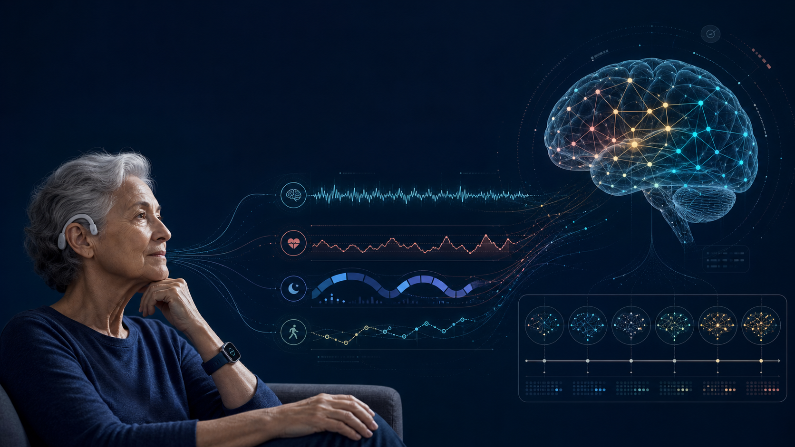

手錶讀得懂你的大腦嗎？穿戴式裝置如何守護高齡與失智照護
從睡眠規律、日夜節律破碎到血漿 p-tau217：一份誠實的證據評析——哪些用途已經站得住腳，哪些還只是假設，以及為什麼體動儀可能成為阿茲海默症的「輔助追蹤」工具。

問題從哪裡開始
失智症的照護長期依賴「門診當下」與「照顧者回憶」。但認知與行為的變化發生在家裡、發生在夜裡，而非診間的那 20 分鐘。我想回答的問題是：我們能不能用一支手錶，把這些看不見的變化持續記錄下來？
先給結論
可以，但要謹慎。目前證據最紮實的用途，是監測「睡眠規律」與「日夜節律」，並證明穿戴式裝置在失智長者身上「戴得住」。更關鍵的是，「用體動儀追蹤阿茲海默症病理」不再只是空想：鹿特丹研究（JAMA Neurology, 2024）已提供前瞻證據，顯示節律破碎能在類澱粉沉積前好幾年就出現變化。因此方向已經明確——與其讓手錶單獨診斷，不如把它「加到」分子診斷（如 p-tau217）之上，作為輔助的早期偵測與長期追蹤工具。單靠手錶即時確診，才是仍需驗證的部分。
必須理解的概念
「數位表型（digital phenotype）」是指用感測器持續量化一個人的行為：睡多久、幾點睡、白天動多少。我特別看重三個指標：睡眠規律性指數（Sleep Regularity Index, SRI）衡量每天作息的一致性（0 到 100，越高越規律）；入睡後醒覺時間（wake after sleep onset, WASO）是入睡後又醒著的時間；「節律破碎」（intradaily variability）則反映日夜活動被打散的程度。裝置也分兩級：研究級可輸出原始加速度資料、可重現分析；消費級（如 Apple Watch、Fitbit）方便好戴，但演算法是不透明的「黑盒子」。
| 指標 | 意義 | 為什麼重要 |
|---|---|---|
| SRI | 每天睡/醒時間的一致性（0–100） | 越規律，失智風險越低 |
| WASO | 入睡後醒著的時間 | 拉長與白天躁動相關 |
| 節律破碎（intradaily variability） | 日夜活動被打散的程度 | 可能早於類澱粉沉積出現 |
證據告訴我什麼
第一，用科技不會變笨，反而可能有保護作用。我看到一份涵蓋 411,430 名中高齡者的統合分析：日常使用數位科技與較低的認知衰退風險相關（勝算比 OR 0.42；風險比 HR 0.74），效力與教育年限相當。我把它讀成「科技儲備」而非「數位失智」。
第二，規律的作息與較低的失智風險相關。在 82,391 名英國成人中，SRI 較高者（≥70）罹患失智的風險較低（HR 0.74），且呈近乎線性的劑量反應；我注意到，作息規律對「睡不夠的人」幫助最大。
第三，手錶量到的節律破碎，可能早在類澱粉沉積前好幾年就出現——這正是「用體動儀追蹤阿茲海默症」這個假說最直接的證據。在鹿特丹研究中，319 位尚無失智的長者先戴體動儀、平均約八年後才做類澱粉正子造影；基線「節律破碎程度」越高，日後腦中類澱粉負荷越高（標準化 β=0.15，95% 信賴區間 0.04–0.26），在帶有 APOE4 基因者身上更明顯。我特別看重一個細節：即使把「基線血漿失智標記（Aβ42/40、p-tau181、p-tau217）已經異常」的人排除後，這個關聯依然存在。這代表節律破碎比較像是「走在病理前面」，而不只是既有病理的早期症狀。不過我仍要保留：這是單一觀察性世代、效應量不大，只能說節律破碎「早於／相關」，而非「診斷」阿茲海默症。
第四，連重度躁動的失智長者也戴得住。我看到一項 29 人的研究用研究級 GENEActiv 手錶，接受度達 96.6%、四週配戴依從率 88.0%（第四週升到 91.4%），沒有一支手錶遺失。研究者提出「配戴依從度與認知功能呈 U 形曲線」：正常與極重度者依從最好。
第五，裝置等級不能互換。與研究級 ActiGraph 相比，Fitbit 高估步數 18%、Apple Watch 低估中高強度活動 46%、Fitbit 高估活動熱量消耗達 139%；步數雖然一致，但強度與睡眠破碎化的量測差很多。我的結論是：要做嚴謹研究，需要原始加速度資料搭配開源工具（如 GGIR、pyActigraphy）。
證據尚未告訴我什麼
我坦白幾個尚未釐清的地方。因果方向仍未定：是科技保護了認知，還是認知較好的人本來就更會用科技？我傾向兩者並存。血漿 p-tau217 能準確反映病理分期（早期類澱粉 AUC 0.964），我把它和體動儀看成互補：血液標記告訴我們「病理走到哪一階」，手錶則補上兩次抽血之間的連續「軌跡」。我認為手錶能「追蹤風險」已有鹿特丹這項前瞻證據支撐；但要當成「診斷工具」或即時預警藥物副作用，目前仍未被證實。另外，坊間流傳一個「WASO 與易怒相關係數 R 約 0.43–0.44」的數字，我在原始論文裡找不到，因此只當作方向性假設看待。
一個具體情境
想像一位早期阿茲海默症患者正在接受類澱粉標靶治療。理想上，如果手錶偵測到連續幾天 SRI 下降、WASO 拉長，或許能提示醫師提前安排檢查。但我要提醒：這些訊號沒有病理特異性——步態變差可能是藥物副作用，也可能只是關節炎或泌尿道感染。所以在我看來，數位表型頂多是「篩檢與提醒訊號」，不能取代影像或血液確診。
我建議讀者可以用的判斷問題
- 這個數字來自幾項研究？（我這篇多數關鍵結論其實各只有一項研究）
- 用的是研究級還是消費級裝置？量測的是步數，還是較不可靠的睡眠分期？
- 這是「相關」還是「因果」？研究對象包含高齡與失智族群嗎？
- 過度盯著睡眠數據，會不會反而造成「完美睡眠焦慮」（orthosomnia）？
結語
在我看來，穿戴式裝置為高齡神經科學打開了一扇窗：它把「巨觀行為」和「大腦健康」連了起來，最實在的價值在於睡眠規律監測、一個能提早數年反映類澱粉風險的節律訊號，以及在脆弱族群身上的可行性。但在我願意把它當成早期診斷或病程追蹤工具之前，這個領域還需要把「單一研究的相關性」升級為「可重現、裝置標準化、族群具代表性、且有分子錨定」的證據。手錶還讀不懂你的大腦——但它已經開始學著讀你的作息。
把圖像讀成研究問題：從訊號到可驗證的假說
這張圖將常見的四類資料放在同一個框架：耳部或頭皮附近的 EEG 反映神經振盪；手腕裝置可連續記錄活動、睡眠時序與部分心血管生理；步態與日常節律則提供功能表現的脈絡。每一種訊號都會受裝置、演算法與佩戴情境影響，因此最可靠的問題不是「某個數字是否異常」，而是同一個人在一段時間內是否出現可重複、具臨床意義的改變。
| 資料層 | 可量測的變化 | 研究上應如何解讀 |
|---|---|---|
| 睡眠與晝夜節律 | 規律性、睡眠中斷、日夜活動分布 | 適合描述長期生活節律；需區分疾病效應、季節、照護安排與裝置演算法差異。 |
| 心血管與自主神經 | 心率、心率變異度、夜間相對變化 | 可作為壓力、睡眠與身體狀態的輔助線索，但不能單獨推論認知退化。 |
| 神經生理 | EEG 頻譜、振盪穩定性、跨日變異 | 最有價值的是標準化量測條件下的縱向變化，並與認知測驗或生物標記交叉驗證。 |
| 功能與行為 | 步態、活動量、日常作息 | 讓生理訊號回到真實世界功能；應納入個人基線，而非只和族群平均比較。 |
參考資料
- Benge JF, Scullin MK. A meta-analysis of technology use and cognitive aging. Nature Human Behaviour. 2025;9(7):1405–1419. doi:10.1038/s41562-025-02159-9
- Bian W, Biswas RK, Ahmadi MN, et al. Dose-response associations of device-measured sleep regularity and duration with incident dementia in 82,391 UK adults. BMC Public Health. 2025;25:516. doi:10.1186/s12889-025-21649-z
- Nguyen Ho PT, Hoepel SJW, Rodriguez-Ayllon M, Luik AI, Vernooij MW, Neitzel J. Sleep, 24-hour activity rhythms, and subsequent amyloid-β pathology. JAMA Neurology. 2024;81(8):824–834. doi:10.1001/jamaneurol.2024.1755
- Guu T-W, Brem A-K, Albertyn CP, Kandangwa P, Aarsland D, ffytche D. Wrist-worn actigraphy in agitated late-stage dementia patients: a feasibility study on digital inclusion. Alzheimer's & Dementia. 2024;20:3211–3218. doi:10.1002/alz.13772
- Guu T-W, Muurling M, Khan Z, Kalafatis C, Aarsland D, ffytche D, Brem A-K. Wearable devices: underrepresentation in the ageing society. The Lancet Digital Health. 2023;5(6):e336–e337. doi:10.1016/S2589-7500(23)00069-9
- Kim H-K, Lee JH, Chun J-H, Kim YJ, Park M, West T, et al. Plasma p-tau217 predicts PET-based pathological staging for precision Alzheimer disease assessment. Alzheimer's & Dementia. 2026;22(2):e71199. doi:10.1002/alz.71199